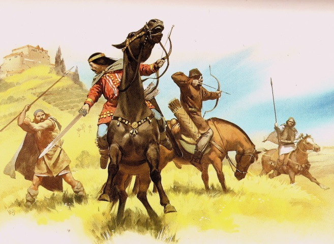
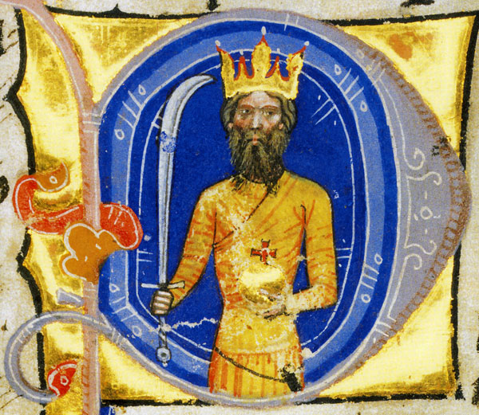
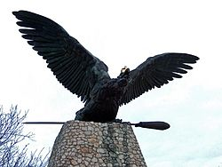
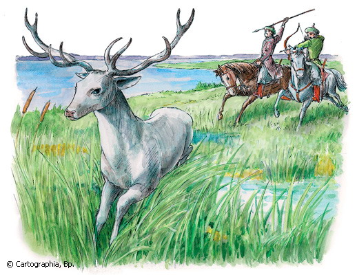

A hun nép
A hunok néven ismert népességet részben kelet-európai, részben belső-ázsiai eredetű pásztorkodó lovasnépek alkották. Nyelvük, legalábbis az uralkodó népességé, a török nyelvek közé tartozhatott. Birodalmuk – melynek központja egy időben a Kárpát-medence volt – írott források alapján jól ismert, a hunok társadalmáról azonban viszonylag kevés feljegyzéssel rendelkezünk.

Attila nagykirály
Attila az európai hunok leghíresebb királya. A Képes krónika szerint: "Attila, Isten kegyelméből Bendegúz fia, a nagy Magyor unokája, ki Engadiban nevelkedett, a hunok, médek, gótok, dánok királya, a földkerekség ijedelme, Isten ostora." A Képes krónika szerint 410 körül született Mundzuk (a magyar mondákban Bendegúz) fiaként. Attila kora egyik leghatalmasabb nomád birodalmát uralta 434-től, befolyása Közép-Európától a Kaszpi-tengerig és a Dunától a Balti-tengerig terjedt.

Turul-dinasztia
A magyar nemzet szent uralkodó dinasztiája Atilla személyében indult útjára, akit a Képes Krónika híradása szerint a 400. évben választottak királlyá, így őt tekintik a magyarok első királyának. A Turul nemzetség történetében három fejezetet különböztethetünk meg. Az első korszak Atilla uralkodásától indul, majd a Turul nemzetség elhagyja a Kárpát-medencét. A második szakasz Álmos és Árpád nagyfejedelemmel indul, akik visszavezetik a nemzetet Atilla örökébe. Ez a kor István koronázásáig tart, majd ezután következik a királyok kora, ami 1301-ig tart, II. András, az utolsó aranyágacska haláláig.

A magyar kapcsolat
Szcítiának első királya Mágóg volt, a Jáfet fia, és az a nemzet Mágóg királytól nyerte a magyar nevet. Ennek a királynak az ivadékából sarjadt az igen nevezetes és roppant hatalmú Attila király. Ő az Úr megtestesülésének négyszázötvenegyedik esztendejében a szittya földről kiszállva hatalmas sereggel Pannónia földjére jött, és a rómaiakat elkergetve az országot birtokába vette. Majd királyi székhelyet állított magának a Duna mellett a hévizek fölött: minden régi épületet, amit ott talált, megújíttatott, és az egészet igen erős fallal vétette körül. Ezt magyar nyelven most Budavárnak mondják, a németek pedig Ecilburgnak hívják. De elég ennyi! Maradjunk meg a történet útján. Hosszú idő múlva pedig ugyanazon Mágóg király ivadékából eredt Ügyek, Álmos vezér apja, kinek Magyarország királyai és vezérei a leszármazottai, miként a következőkben majd előadjuk.
